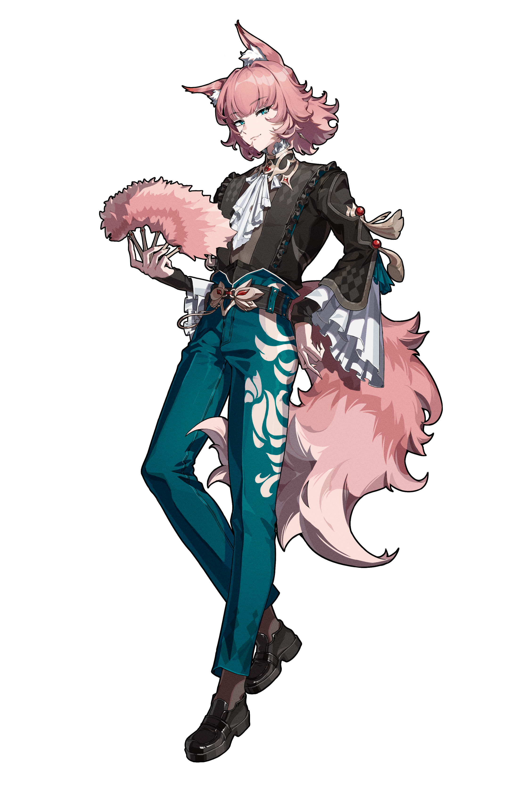

返回

晏绥璃
"第三季度赤字是因为收购了更多白檀香木——绝对不是为了把议事厅熏得适合午睡哦。"
鹤栖延国医集团的旁系成员，延续标记者之一，原名琉仙·晏璃·勒纳尔（Lucien Yanli Renard），在海外与姜焱芪认识，并发展为情侣，与姜焱芪回国一起治理家业，其性格温柔，极为聪慧，十分顺从姜焱芪。其能力为香韵，其散发出的香味被鹤栖延国医集团研究院发现具有强力加强药效之功效，该能力还可潜移默化改变人的心境。